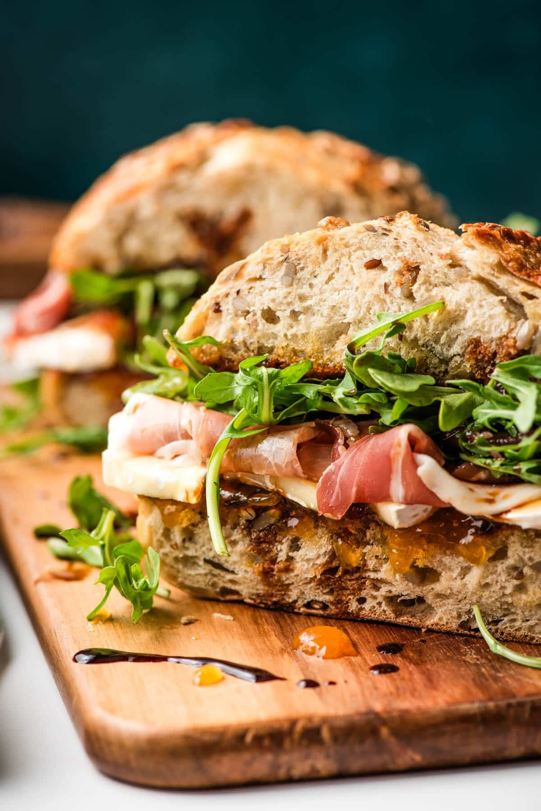

Home

This sophisticated yet hearty European-style sandwich is sure to impress
as the centerpiece of your next lunch!
Ingredients
- 4 Tablespoons butter (at room temperature)
- 4 thick slices bread
- ½ cup apricot preserves
- 5 ounces brie cheese (sliced)
- 3 ounces sliced prosciutto
- ½ cup arugula
- Good quality balsamic vinegar (for drizzling)
Directions
-
Preheat a grill pan over medium high heat. Butter one side of each of
the slices of bread and place it, buttered side down, on the skillet.
Grill for 2-3 minutes or until golden and toasted.
-
Spread the apricot jam on the interior of the bread. Top one slice with
the sliced brie, then layer the prosciutto on top, followed by the
greens.
- Drizzle with balsamic vinegar and sandwich together.